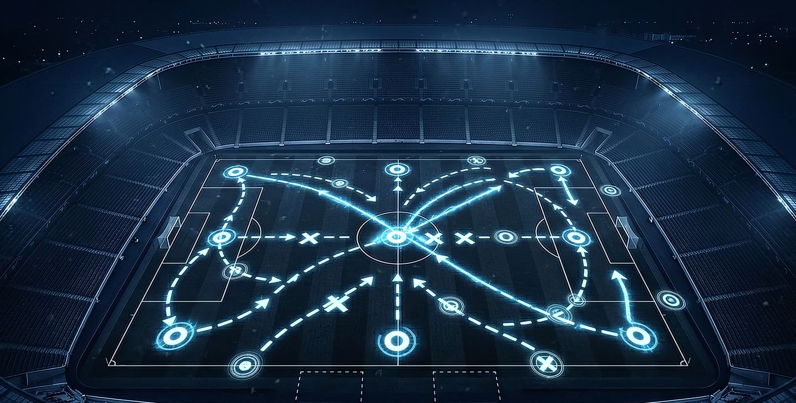
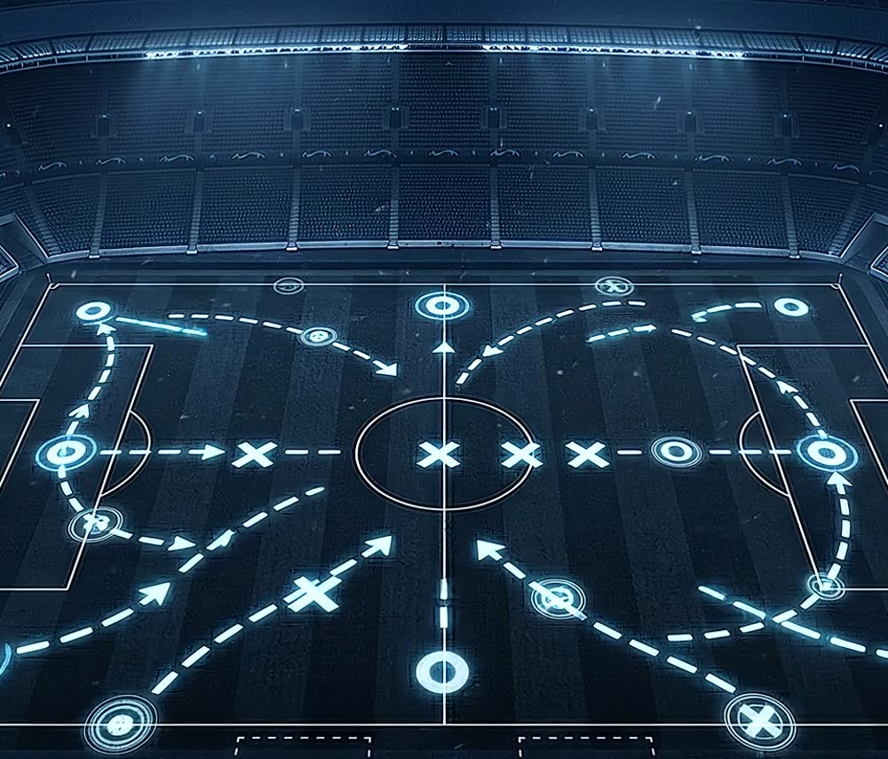
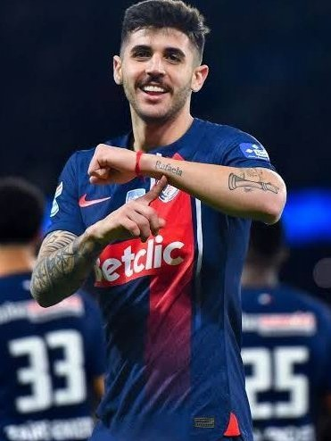

Entenda o jogo.
Tome melhores decisões.
A Next Decision é uma plataforma de desenvolvimento tático para atletas de base. A mesma leitura de jogo que a elite usa, adaptada para quem está construindo a carreira.
Criada por profissionais que analisam atletas de alto rendimento todos os dias.
Treina muito. Joga muito. Entende pouco.
Na base sobra treino técnico e sobra preparação física. O que quase ninguém oferece é educação tática: ensinar o atleta a ler o espaço, antecipar a jogada e escolher a melhor opção antes da bola chegar.
O futebol moderno cobra inteligência. É essa lacuna que a Next Decision preenche.
Não ensinamos futebol. Ensinamos atletas a entender futebol.
Nossa metodologia nasceu dentro dos campos, com atletas profissionais, em situações reais de jogo. Cada conteúdo vem da prática diária, não de apostilas. Quem prepara o material é quem analisa atleta de alto rendimento todos os dias.
Não somos um curso.
Curso tem começo, meio e fim. Somos uma plataforma de desenvolvimento tático contínuo, que cresce com você, mês após mês.
Não somos uma mentoria.
Mentoria é individual e pontual. Somos uma metodologia escalável e acessível, para que todo atleta evolua no seu ritmo.
Não somos um canal de vídeos.
Vídeo é só um dos formatos. Somos um ecossistema onde o conhecimento vira leitura de jogo real.
Um indicador tático por mês. Quatro semanas para dominar.
Todo mês a Next Decision escolhe um indicador de desempenho tático: uma situação concreta de jogo que o atleta precisa entender e dominar. Durante quatro semanas esse indicador é apresentado ao vivo, analisado em vídeos curtos com exemplos reais, aprofundado e encerrado com a turma.
- Um indicador por vez
- Foco em uma situação de jogo até ela ficar automática. Sem pular de assunto antes de entender.
- Ao vivo no começo e no fim
- O mês abre com um encontro que apresenta o indicador e fecha com outro que esclarece as dúvidas da turma.
- Lances reais, em vídeos curtos
- Dez vídeos por mês com análises e exemplos extraídos do futebol profissional, para assistir no celular.
- Comunidade o mês inteiro
- Quizzes, desafios e interações entre uma etapa e outra. As dúvidas coletadas viram pauta do encontro final.

No mês seguinte, um novo indicador. O ciclo recomeça e o atleta vai acumulando leituras de jogo, uma por vez, até pensar o jogo como um profissional.
Ver as quatro semanasAs quatro semanas do mês
A mesma estrutura todo mês. O atleta sabe o que vem e organiza a semana de estudo em volta do treino.
-
Semana 1
Encontro ao vivo
Apresentamos o indicador do mês e explicamos as situações de jogo que interferem nele.
Ao vivo -
Semana 2
Cinco vídeos curtos
Análises e exemplos reais do indicador em ação, para assistir no seu tempo.
5 vídeos -
Semana 3
Mais cinco vídeos curtos
Aprofundamento do indicador: variações, erros comuns e como corrigir cada um deles.
5 vídeos -
Semana 4
Encontro ao vivo
Esclarecemos as dúvidas coletadas na comunidade e encerramos o conteúdo do mês.
Ao vivo
Quizzes, desafios, interações e coleta de dúvidas na comunidade. O atleta pratica a leitura entre uma etapa e outra, e nenhuma dúvida fica sem resposta.
O que o atleta ganha
Quando você entra para a Next Decision, não está comprando um conteúdo. Está investindo em uma mudança real dentro de campo.
-
Leitura de jogo apurada Você começa a entender o jogo antes mesmo de receber a bola. Antecipa a jogada e decide mais rápido.
-
Confiança tática Você sabe o que fazer em cada situação. Isso muda a sua postura dentro e fora do campo.
-
Evolução visível Treinadores e pais percebem a diferença. Você se destaca porque pensa diferente.
-
Preparação para o próximo nível Seja para um teste, uma peneira ou um contrato, você chega mais preparado do que a maioria.
E para quem acompanha de perto
Atletas que fazem parte da Next Decision
Jogadores que usam a nossa metodologia de leitura de jogo no dia a dia do alto rendimento. A mesma metodologia que chega até você.

Fotos cedidas pelos próprios atletas e pelos clubes.
Tudo que está incluído
Um único plano, sem níveis de assinatura. Todo atleta recebe o mesmo acesso completo.
-
2 encontros ao vivo por mêsAbertura e encerramento de cada indicador, com a turma.
-
Replay de todos os encontrosPerdeu o horário? Assiste depois, quantas vezes quiser.
-
10 vídeos curtos por mêsAnálises e exemplos reais do indicador em ação.
-
Conteúdos individuais por posiçãoO que o indicador do mês cobra de você no seu setor.
-
Exercícios toda semanaTarefas de decisão para levar o conceito ao treino.
-
Quizzes e desafiosPara testar a leitura entre uma etapa e outra do mês.
-
Comunidade de atletasInterações, discussões e coleta de dúvidas durante todo o mês.
-
Estudos de jogoLances do futebol profissional destrinchados passo a passo.
Um plano. Duas formas de pagar.
O conteúdo é o mesmo nas duas opções. A diferença está só em como você prefere pagar.
Pagamento mensal
Para começar agora e decidir mês a mês.
R$397por mês
Cobrança mensal recorrente.
- Acesso completo a tudo que está incluído
- Um novo indicador tático por mês
- Cancele quando quiser
Sem fidelidade. Cancele quando quiser.
Pagamento anual
Para quem vai levar a sério o ano inteiro.
12xR$197sem juros
Total de R$ 2.364 por ano.
- Acesso completo a tudo que está incluído
- 12 indicadores táticos ao longo do ano
- Parcelado em 12x sem juros
Equivale a R$ 197 por mês.
Clube ou escolinha querendo levar a metodologia para o grupo inteiro? Fale com a gente sobre turmas fechadas.
Dúvidas frequentes
A Next Decision substitui o treino no clube?
Não, e nem tem essa intenção. O trabalho de campo continua sendo do clube ou da escolinha. Nós cuidamos da parte que quase ninguém trabalha: entender o que está acontecendo em volta e decidir melhor com isso.
O que é um indicador de desempenho tático?
É uma situação concreta do jogo que o atleta precisa entender e dominar. A cada mês trabalhamos um indicador diferente, do começo ao fim: apresentação ao vivo, dez vídeos curtos com exemplos reais, exercícios e um encontro final para tirar dúvidas.
Como funcionam os encontros ao vivo?
São dois por mês, online, por videochamada, em horário divulgado com antecedência na comunidade. No primeiro apresentamos o indicador do mês. No último respondemos as dúvidas coletadas e encerramos o conteúdo. Quem não puder participar assiste ao replay depois.
Preciso jogar em um clube para participar?
Não. Recebemos atletas de clubes, de escolinhas e também quem joga só com os amigos e quer entender o jogo de verdade. O que a gente pede é interesse em estudar.
Qual é a diferença entre o pagamento mensal e o anual?
Nenhuma no conteúdo: o plano é um só e inclui tudo. No mensal você paga R$ 397 por mês. No anual você paga 12 parcelas de R$ 197 sem juros, total de R$ 2.364, e economiza R$ 2.400 em relação a 12 meses no mensal.
Posso cancelar quando quiser?
No plano mensal, sim. Não há fidelidade nem multa de cancelamento.
Do que preciso para acompanhar as aulas?
Um celular ou computador com internet. Todo o conteúdo é online e a maior parte dos atletas assiste pelo próprio celular.
A evolução começa antes da bola chegar aos seus pés
Escolha a forma de pagamento, entre para a Next Decision e comece a estudar o indicador deste mês.